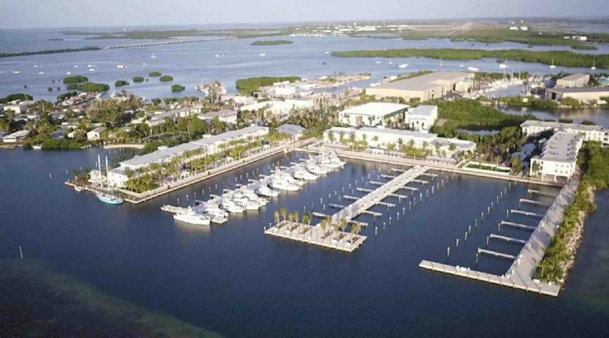
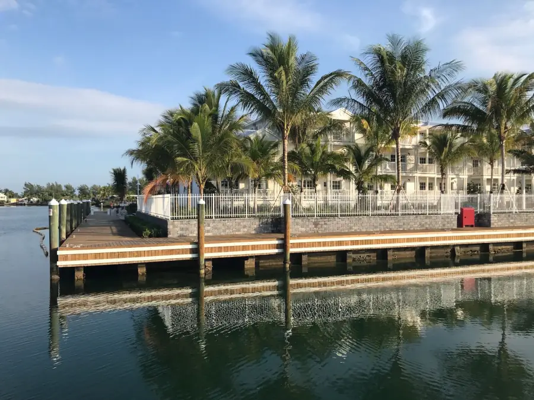
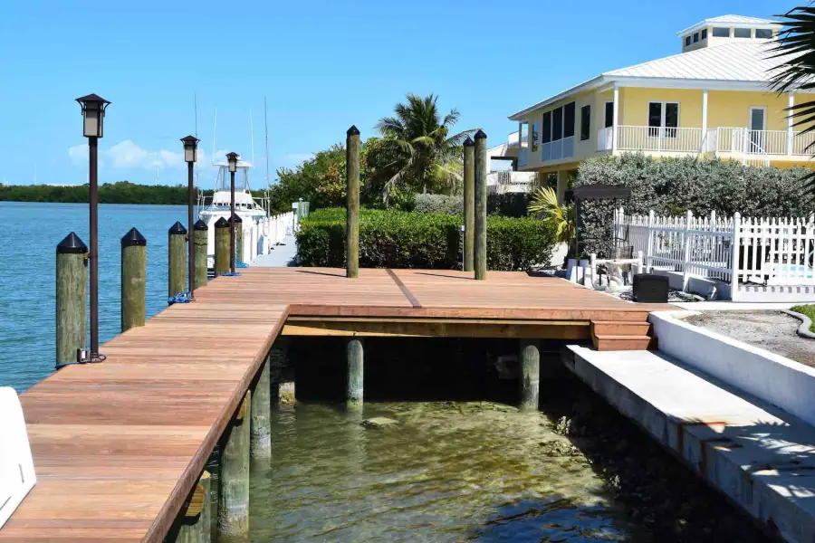
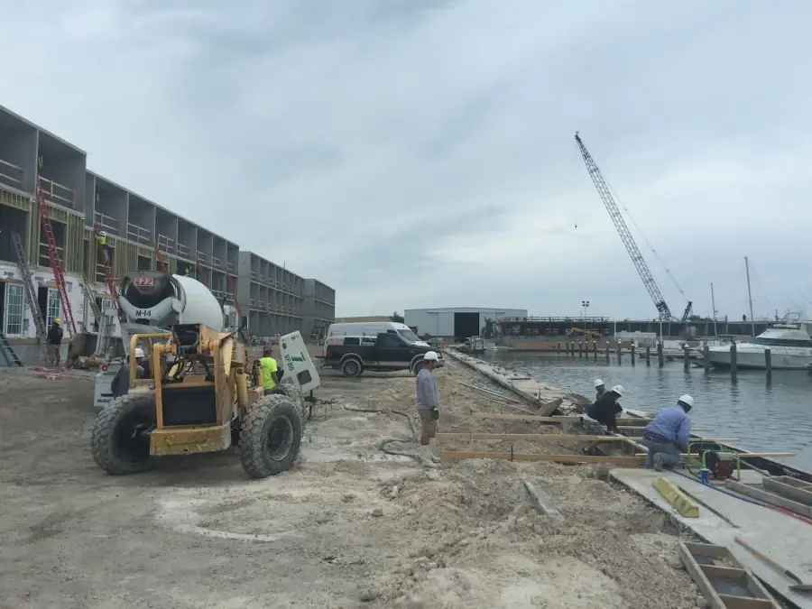
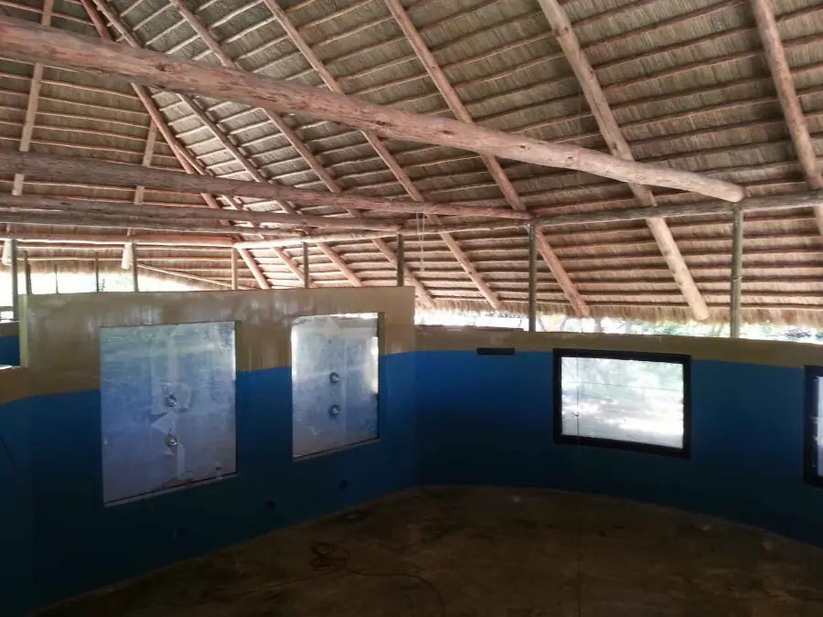
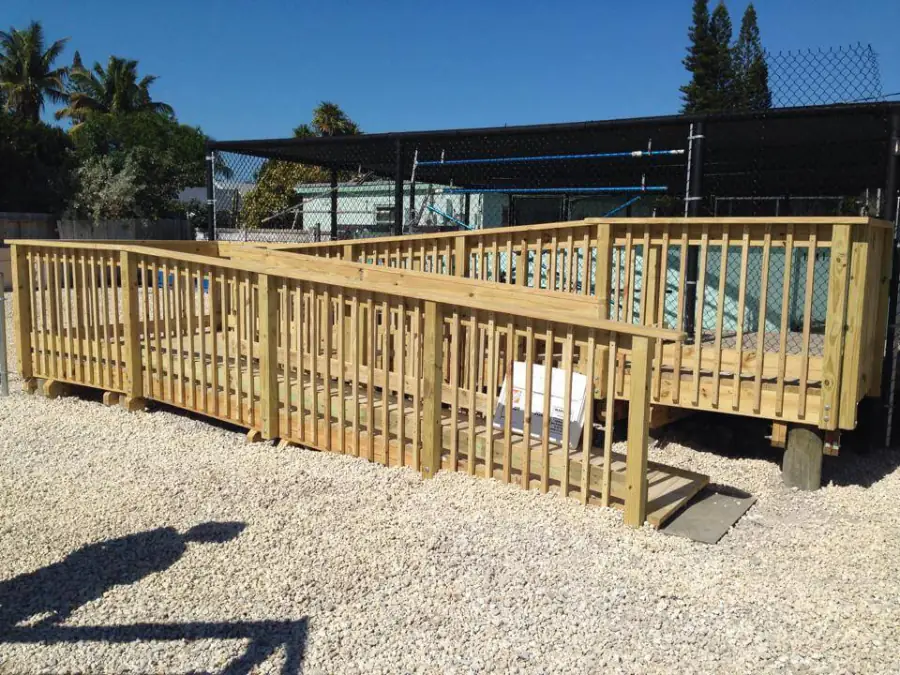
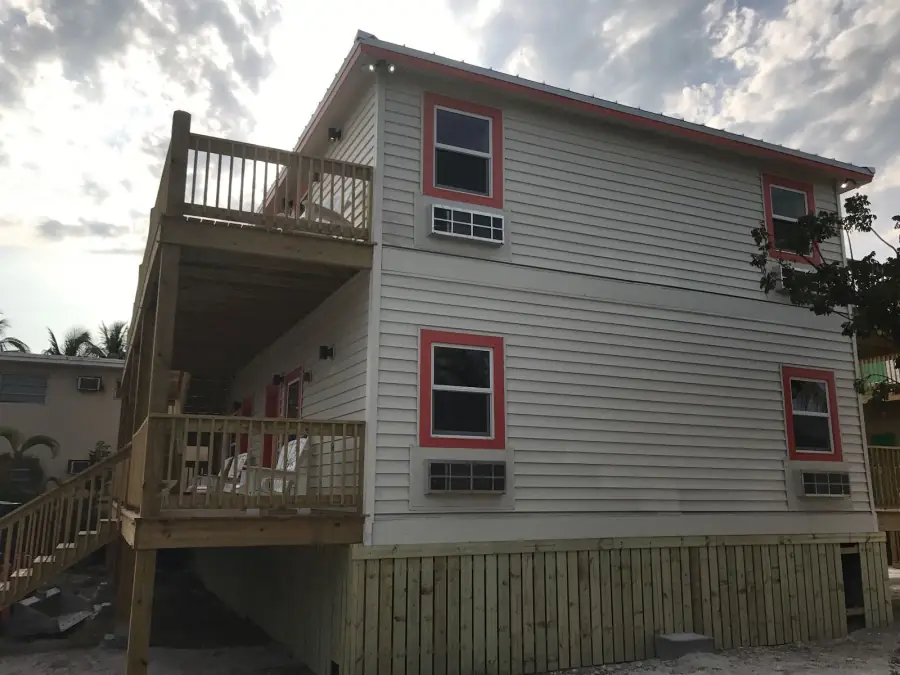
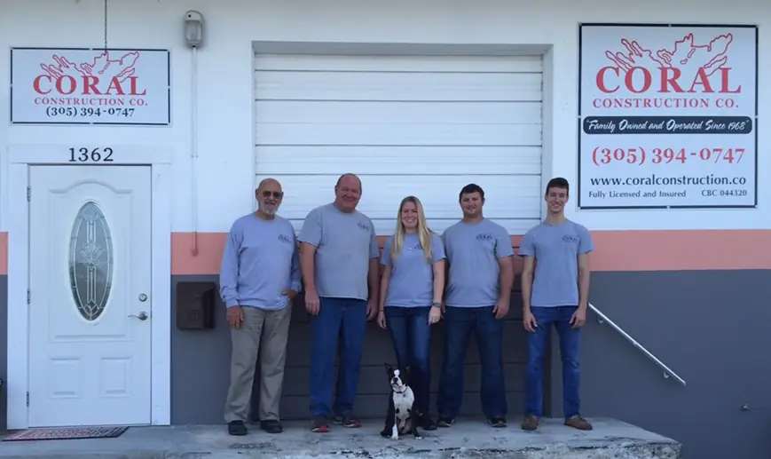
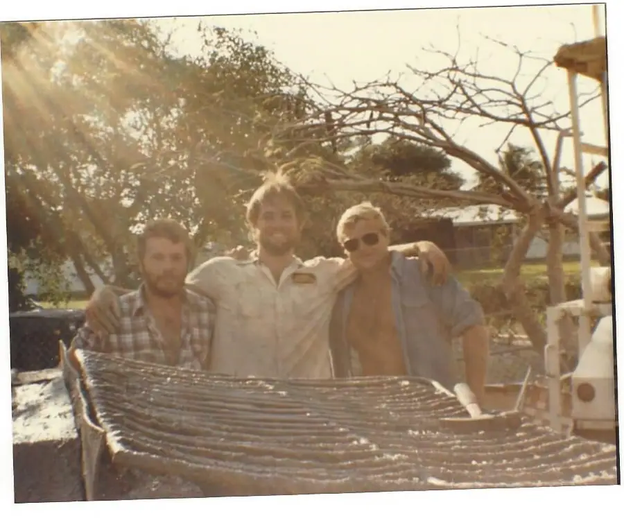

EST.1968Family owned & operated in Marathon, Florida Keys
Built on coral. Built for the Keys.
For more than half a century, the Steinmetz family has built the marinas, docks, seawalls and foundations the Florida Keys are made of. Today we bring that same hands-on, generational craftsmanship to public works — the roads, utilities and waterfronts every island depends on.
1968
Founded in the
Florida Keys
58years
Family owned
& operated
1family
On every job site,
start to finish
3disciplines
Marine, building
& public works
Who we are
In the Keys, everything is built at the water’s edge.
Salt air, storm surge, coral bedrock and some of the most protected waters in the country — building here is unlike building anywhere else. Since 1968, Coral Construction has met those conditions head-on, earning a reputation across the island chain for work that’s done right and built to last.
We’re a family company in the truest sense. The family that founded Coral still runs it, and still shows up on the job site from the first piling to the final walkthrough.

What we build
Three disciplines. One standard.
Whether it’s a resort marina, a family home or a county road, every project gets the same hands-on attention our family has given since day one.

01Marine Construction
Marinas, docks and seawalls engineered for saltwater, storm surge and decades of hard use — plus the structural repairs that keep existing waterfronts safe.
- Marinas
- Docks
- Seawalls
- Spall repair
- Piling & dock repair
 02
02Residential & Commercial
New construction, remodels, foundations, stairs and ADA upgrades for homes, resorts and some of the Keys’ best-loved destinations.
- New construction
- Remodeling
- Foundations
- Stairs
- ADA access

03Public Works & Government
Road, utility, drainage and waterfront repairs for municipalities, Monroe County, state agencies and prime contractors — delivered by a crew that lives where it works.
- Road repair
- Utilities
- Stormwater
- Bridges & seawalls
- Storm response
Selected projects
Landmarks from Stock Island to Duck Key
Marina
Oceans Edge Marina
Stock Island, Key West

Composite dock
Pigeon Key Dock
Pigeon Key

New construction
Florida Keys Aquarium Encounters
Marathon

Marina & stairs
Hawks Cay Resort
Duck Key

ADA access
The Turtle Hospital ADA Ramp
Marathon

New construction
Coconut Cay Resort
Marathon
Keys-built expertise
Engineered for salt, sun and storms.
Construction in the Florida Keys has to answer to the ocean. Every decision — materials, fasteners, foundations, scheduling — is made with the water in mind. Here’s what more than five decades on the island chain have taught us.
Saltwater-grade materials
Ipe hardwood, marine-grade timber, composite decking, PVC piling and reinforced concrete — specified for the environment, not the catalog.
Storm-hardened by design
We build to the Florida Building Code’s wind and flood provisions, because in the Keys hurricane season isn’t hypothetical — it’s a deadline.
Permits, navigated
In-water and coastal work often needs county, state and federal sign-off. We know the process and plan the schedule around it.
Light on the water
Turbidity controls, careful staging and respect for seagrass, reef and wildlife. The Florida Keys National Marine Sanctuary is our backyard, too.

Family owned & operated
Our name is on the sign. Our family is on the site.
Coral Construction Company was started in 1968 by Arnold Steinmetz and his father. More than half a century later it’s still family owned and operated — and that’s not a slogan. It’s how we work.
Reputation
Coral earned its reputation early, and it’s what has kept us busy for more than five decades. In a community this close-knit, every job is a reference — and we treat it that way.
Versatility
Multiple generations of experience means we’ve seen — and solved — nearly every challenge the Keys can throw at a builder, from failing seawalls to ground-up commercial buildings.
Hands-on control
From the beginning, our family has been on the job site from the first stake to the final walkthrough. Even now, Arnie stops by to make sure the work meets his standard.
Our story
We were here before the new Seven Mile Bridge.
- 1949
Our family builds a home in Saginaw, Michigan — the oldest project in the family album.
- 1968
Arnold Steinmetz and his father start Coral Construction Company.
- 1982
The family pours foundations and sets pre-stressed slabs — the same year the new Seven Mile Bridge opens.
- Today
Still family owned, still on the job site, and now serving public agencies across the Keys.

Government Roads · Utilities · Drainage · Bridges · Seawalls
For agencies & prime contractors
Local crews for the infrastructure the Keys run on.
One highway connects every island in the chain. When a road washes out, a culvert fails or a utility line breaks, public owners need a contractor who can be there the same day — and who knows how to work in a fragile marine environment.
See our public works capabilitiesHow we work
From first call to final walkthrough.
- STEP1
Site visit
We meet you on site, listen to your goals and study the conditions — water depth, access, soils and existing structures.
- STEP2
Proposal & permits
A clear scope, schedule and price, followed by help securing the permits and approvals your project needs.
- STEP3
Build
Our crews do the work, with a member of the family overseeing it from the first piling to the last board.
- STEP4
Walkthrough
We walk the finished project with you and make sure every detail meets our standard — and yours.
Start a project
Have a project on the water — or on the road?
Tell us what you’re planning. We’ll follow up to talk through scope, schedule and next steps — no pressure, no runaround.